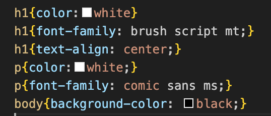
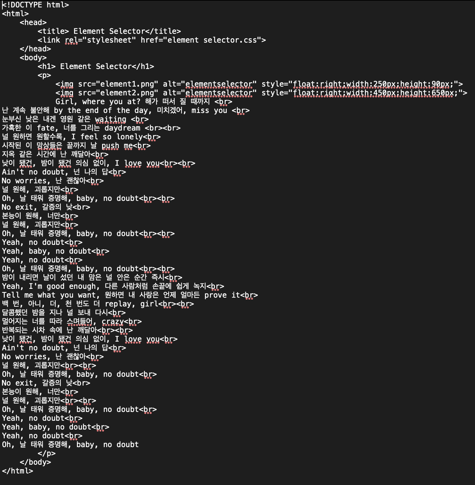

Girl, where you at? 해가 떠서 질 때까지
난 계속 불안해 by the end of the day, 미치겠어, miss you
눈부신 낮은 내겐 영원 같은 waiting
가혹한 이 fate, 너를 그리는 daydream
널 원하면 원할수록, I feel so lonely
시작된 이 망상들은 끝까지 날 push me
지옥 같은 시간에 난 깨달아
낮이 됐건, 밤이 됐건 의심 없이, I love you
Ain't no doubt, 넌 나의 답
No worries, 난 괜찮아
널 원해, 괴롭지만
Oh, 날 태워 증명해, baby, no doubt
No exit, 갈증의 낮
본능이 원해, 너만
널 원해, 괴롭지만
Oh, 날 태워 증명해, baby, no doubt
Yeah, no doubt
Yeah, baby, no doubt
Yeah, no doubt
Oh, 날 태워 증명해, baby, no doubt
밤이 내리면 날이 섰던 내 맘은 널 안은 순간 즉시
Yeah, I'm good enough, 다른 사람처럼 손끝에 쉽게 녹지
Tell me what you want, 원하면 내 사랑은 언제 얼마든 prove it
백 번, 아니, 더, 천 번도 더 replay, girl
달콤했던 밤을 지나 널 보내 다시
멀어지는 너를 따라 스며들어, crazy
반복되는 시차 속에 난 깨달아
낮이 됐건, 밤이 됐건 의심 없이, I love you
Ain't no doubt, 넌 나의 답
No worries, 난 괜찮아
널 원해, 괴롭지만
Oh, 날 태워 증명해, baby, no doubt
No exit, 갈증의 낮
본능이 원해, 너만
널 원해, 괴롭지만
Oh, 날 태워 증명해, baby, no doubt
Yeah, no doubt
Yeah, baby, no doubt
Yeah, no doubt
Oh, 날 태워 증명해, baby, no doubt